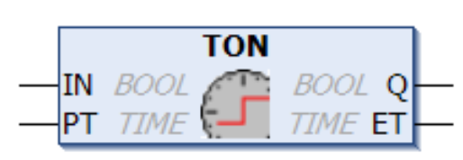
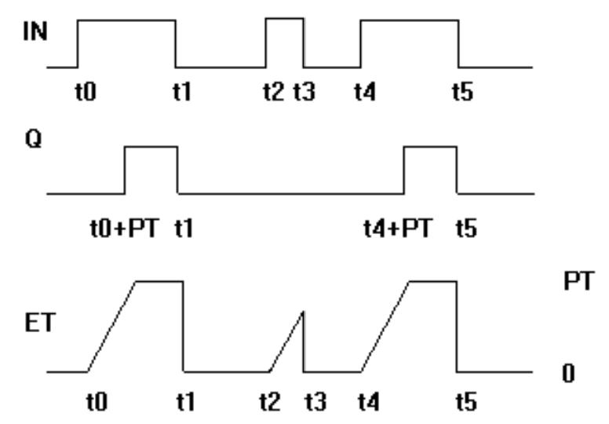
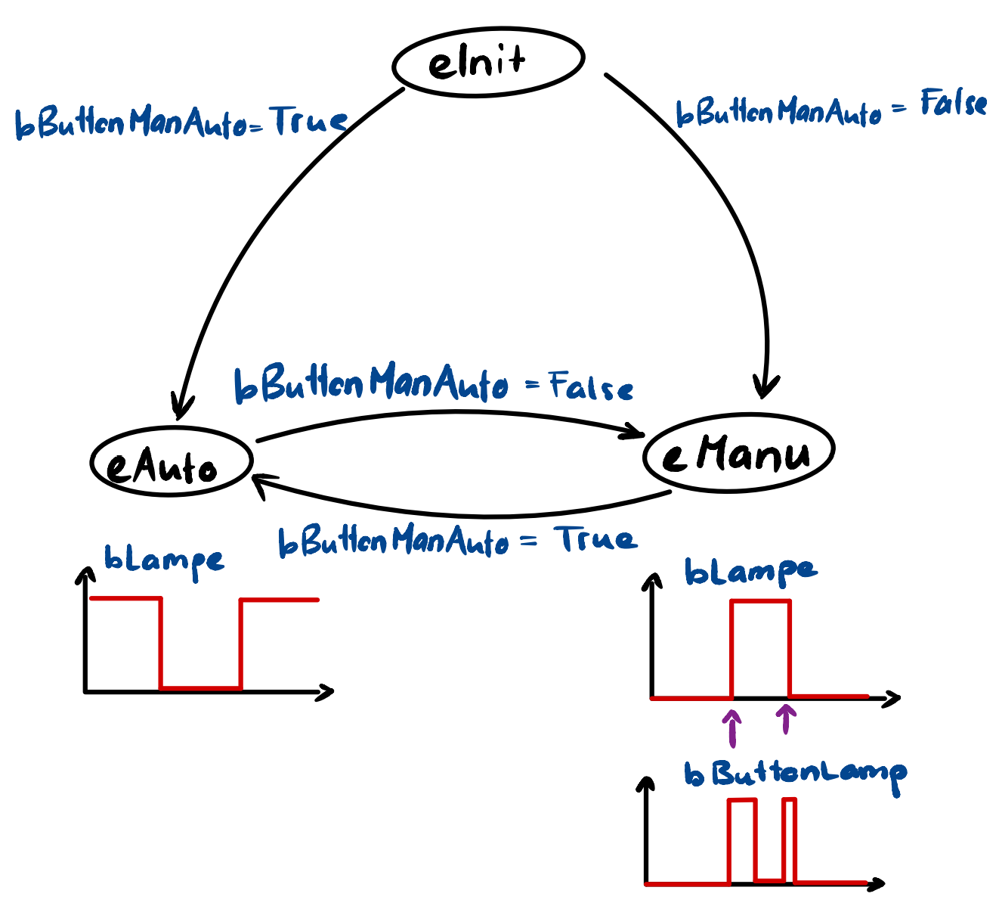

Automatisierung
Data types
| Data type | Lower bound | Upper bound | Memory space |
|---|---|---|---|
| BYTE | 0 | 255 | 8 bit |
| WORD | 0 | 65535 | 16 bit |
| DWORD | 0 | 4294967295 | 32 bit |
| LWORD | 0 | 2^64-1 | 64 bit |
| SINT | -128 | 127 | 8 bit |
| USINT | 0 | 255 | 8 bit |
| INT | -32768 | 32767 | 16 bit |
| UINT | 0 | 65535 | 16 bit |
| DINT | -2147483648 | 2147483647 | 32 bit |
| UDINT | 0 | 4294967295 | 32 bit |
| LINT | -2^63 | 2^63-1 | 64 bit |
| ULINT | 0 | 2^64-1 | 64 bit |
| BOOL | FALSE (0) | TRUE (1) | 8 bit |
| REAL | -3.402823e+38 | 3.402823e+38 | 32 bit |
| LREAL | -1.7976931348623158e+308 | 1.7976931348623158e+308 | 64 bit |
VAR
var :INT:= 10;
END_VARVergleichsoperatoren
| Funktion | Operator |
|---|---|
| Gleichheit | = |
| Grösser oder gleich | >= |
| Grösser als | > |
| Kleiner oder gleich | <= |
| Kleiner als | < |
| Ungleichheit | <> |
Bitoperatoren
| Funktion | Operator |
|---|---|
| bitweisen AND | AND |
| bitweisen NOT | NOT |
| bitweisen OR | OR |
| bitweisen XOR | XOR |
Array
Declaration 1:
One-dimensional array of 10 integer elements
Lower index limit: 0 Upper index limit: 9
VAR
aCounter : ARRAY[0..9] OF INT;
bCounter : ARRAY[0..9] OF INT := [0, 10, 20, 30, 40, 50, 60, 70, 80, 90];
END_VARStruct
Eine Struktur ist ein benutzerdefinierter Datentyp und fasst mehrere Variablen mit beliebigen Datentypen zu einer logischen Einheit zusammen. Die innerhalb einer Struktur deklarierten Variablen werden als Komponenten bezeichnet.
Beispiel
Strukturdeklaration
TYPE ST_CONTROL :
STRUCT
bitOperationEnabled : BIT;
bitSwitchOnActive : BIT;
bitEnableOperation : BIT;
bioterror : BIT;
bitVoltageEnabled : BIT;
bitQuickStop : BIT;
bitSwitchOnLocked : BIT;
bitWarning : BIT;
END_STRUCT
END_TYPEStrukturzugriff
PROGRAM MAIN
VAR
stControl : ST_CONTROL;
END_VAR
IF stControl.bitVoltageEnabled = TRUE THEN
// Symbolic bit access
stControl.bitEnableOperation := TRUE;
END_IFObjekt Funktion
Eine Funktion ist eine POU, die bei der Ausführung genau ein Datenelement liefert und dessen Aufruf in textuellen Sprachen als Operator in Ausdrücken vorkommen kann. Das Datenelement kann auch ein Array oder eine Struktur sein.
Funktionen haben keine interne Statusinformation, das bedeutet, dass Funktionen die Werte ihrer Variablen nicht bis zum nächsten Aufruf speichern. Aufrufe einer Funktion mit denselben Eingabevariablen-Werten liefern immer denselben Ausgabewert. Deshalb dürfen Funktionen keine globalen Variablen und Adressen verwenden!
Beispiel
FUNCTION <function> : <data type>
FUNCTION F_Summe : INT
VAR_INPUT
nVar1 : INT;
nVar2 : INT;
END_VAR
VAR
END_VAR
F_Summe := nVar1 + nVar2;Aufzählungen / Enumerationen
Eine Enumeration oder Aufzählung ist ein benutzerdefinierter Datentyp, der sich aus einer kommaseparierten Reihe von Komponenten, auch Enumerationswerte genannt, zusammensetzt, um benutzerdefinierte Variablen zu deklarieren. Die Deklaration einer Enumeration nehmen Sie in einem DUT-Objekt vor, das Sie über den Befehl im Kontextmenü des SPS-Projektbaums im Projekt anlegen. ### Beispiel
TYPE En_States :
(
eInit := 0,
eAuto := 1,
eManu := 2
);
END_TYPE en_State := En_States;
Objekt Funktionsbaustein
Ein Funktionsbaustein ist eine POU, die bei der Ausführung einen oder mehrere Werte liefert. Die Werte der Ausgabevariablen und der internen Variablen bleiben nach einer Ausführung bis zur nächsten erhalten. Dies bedeutet, dass der Funktionsbaustein bei mehrmaligem Aufruf mit denselben Eingabevariablen nicht unbedingt dieselben Ausgabewerte liefert.
Objekt Programm
Ein Programm ist eine POU, die bei der Ausführung einen oder mehrere Werte liefert. Alle Werte bleiben nach einer Ausführung des Programms bis zur nächsten Ausführung erhalten. Die Aufrufreihenfolge der Programme innerhalb eines SPS-Projekts definieren Sie in Taskobjekten.
Wenn eine POU ein Programm aufruft und sich dadurch Werte des Programms verändern, bleiben diese Änderungen bis zum nächsten Programmaufruf erhalten. Die Werte des Programms bleiben auch dann erhalten, wenn der erneute Aufruf durch eine andere POU erfolgt. Dies unterscheidet sich vom Aufruf eines Funktionsbausteins. Beim Funktionsbaustein-Aufruf ändern sich nur die Werte der jeweiligen Instanz des Funktionsbausteins. Die Änderungen sind nur zu beachten, wenn eine POU dieselbe Instanz erneut aufruft.
FOR-Schleife
Mit der FOR-Schleife kann man wiederholte Vorgänge programmieren. FOR <INT_Var> := <INIT_WERT> TO <END_WERT> {BY <Schrittgröße>} DO
FOR Zaehler:=1 TO 5 BY 1 DO
Var1:=Var1*2;
END_FOR;WHILE-Schleife
Die WHILE-Schleife kann benutzt werden wie die FOR-Schleife, mit dem Unterschied, dass die Abbruchbedingung ein beliebiger boolscher Ausdruck sein kann. Das heißt, man gibt eine Bedingung an, die, wenn sie zutrifft, die Ausführung der Schleife zur Folge hat. WHILE <Boolescher Ausdruck> DO
WHILE Zaehler<>0 DO
Var1 := Var1*2;
Zaehler := Zaehler-1;
END_WHILEWHILE-Schleife
Die REPEAT-Schleife unterscheidet sich von den WHILE-Schleifen dadurch, dass die Abbruchbedingung erst nach dem Ausführen der Schleife überprüft wird. Das hat zur Folge, dass die Schleife mindestens einmal durchlaufen wird, egal wie die Abbruchbedingung lautet. UNTIL <Boolescher Ausdruck>
REPEAT
Var1 := Var1*2;
Zaehler := Zaehler-1;
UNTIL
Zaehler=0
END_REPEATTimer TON
Wenn IN = FALSE ist, sind die Ausgaben FALSE bzw. 0. Sobald IN = TRUE ist, wird in ET die Zeit in Millisekunden hochgezählt, bis der Wert gleich dem in PT ist, dann bleibt er gleich. Q ist TRUE wenn IN = TRUE und ET = PT ist. Sonst ist Q = FALSE. Q hat somit eine steigende Flanke, wenn die in PT in Millisekunden angegebene Zeit abgelaufen ist.

VAR_INPUT
IN : BOOL; (* starts timer with rising edge, resets timer with falling edge *)
PT : TIME; (* time to pass, before Q is set *)
END_VARVAR_OUTPUT
Q : BOOL; (* is TRUE, PT seconds after IN had a rising edge *)
ET : TIME; (* elapsed time *)
END_VAR
Beispiel
PROGRAM MAIN
VAR
timer1 :TON;
bTimerDone:BOOL;
bTimerIn:BOOL;
END_VAR
timer1(IN:=bTimerIn,PT := T#20S);
IF timer1.Q THEN
//timer1.IN := FALSE; geht nicht
timer1(IN:=FALSE);
timer1.IN := FALSE;
timer1();
END_IFST-Anweisung CASE (switch case)
Die CASE-Anweisung verwenden Sie, um mehrere bedingte Anweisungen mit derselben Bedingungsvariablen in einem Konstrukt zusammenzufassen.
Syntax:
CASE <Var1> OF
<value1>:<instruction1>
<value2>:<instruction2>
<value3, value4, value5>:<instruction3>
<value6 ... value10>:<instruction4>
...
<value n>:<instruction n>
{ELSE <ELSE-instruction>}
END_CASE;Der Abschnitt innerhalb der geschweiften Klammer {} ist optional.
Abarbeitungsschema einer CASE-Anweisung:
- Wenn die Variable <Var1> den Wert <<value i> hat, wird die Anweisung <instruction i> ausgeführt.
- Wenn die Variable <Var1> keinen der angegebenen Werte hat, dann wird die <ELSE-instruction> ausgeführt.
- Wenn für mehrere Werte der Variablen dieselbe Anweisung auszuführen ist, können Sie diese Werte durch Kommata getrennt hintereinander schreiben.Beispiel
CASE nVar OF
1,5 : bVar1 := TRUE;
bVar3 := FALSE;
2 : bVar2 := FALSE;
bVar3 := TRUE;
10..20 : bVar1 := TRUE;
bVar3 = TRUE;
ELSE
bVar1 := NOT bVar1;
bVar2 := bVar1 OR bVar2;
END_CASE;Statemaschine Beispiel

Inputs and Outputs
VAR_GLOBAL
bLamp : BOOL;
bButtonLamp : BOOL;
bButtonManAuto : BOOL;
END_VARStates
TYPE En_States :
(
eUndefined := 0,
eInit ,
eAuto ,
eManu
);
END_TYPEMain
PROGRAM MAIN
VAR
enState : En_States := En_States.eInit;
enStateOld : En_States;
enStateNext : En_States;
fb_Blinker : FB_Blinker;
END_VAR
CASE enState OF
(*-----------------undefined state-----------------*)
En_States.eUndefined:
;
(*-----------------init state-----------------*)
En_States.eInit:
//Entry action
//Cyclic action
IF GVL_IO.bButtonManAuto = TRUE THEN
enState := En_States.eAuto;
ELSE
enState := En_States.eManu;
END_IF
//Exit action
;
(*-----------------auto state-----------------*)
En_States.eAuto:
//Entry action
IF enState <> enStateOld THEN
GVL_IO.bLamp := TRUE;
END_IF
//Cyclic action
fb_Blinker(bIn := GVL_IO.bLamp, bOut => GVL_IO.bLamp);
IF GVL_IO.bButtonManAuto = FALSE THEN
enStateNext := En_States.eManu;
END_IF
//Exit action
;
(*-----------------manu state-----------------*)
En_States.eManu:
//Entry action
IF enState <> enStateOld THEN
GVL_IO.bLamp := FALSE;
END_IF
//Cyclic action
IF enState <> enStateOld THEN
GVL_IO.bButtonLamp := FALSE; //Achtung bei echten Button braucht es edge detection
GVL_IO.bLamp := NOT(GVL_IO.bLamp);
END_IF
IF GVL_IO.bButtonManAuto THEN
enStateNext := En_States.eAuto;
END_IF
//Exit action
;
ELSE
enState := En_States.eUndefined;
END_CASE
enStateOld := enState;
enState := enStateNext;call by Value
VAR_INPUT
<variable name> : <data type> ( := <initialization value> )? ;
END_VAREs muss ein Rückgabewert übergeben werden und muss zusätzlichen Speicher allozieren werden.
call by Refernce
VAR_IN_OUT
<variable name> : <data type> ( := <initialization value> )? ;
END_VAREs muss kein Rückgabewert übergeben werden und kein zusätzlichen Speicher allozieren werden.